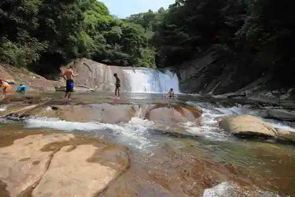
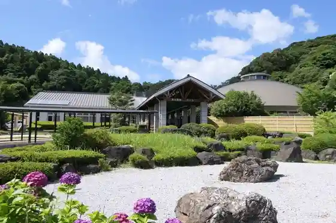
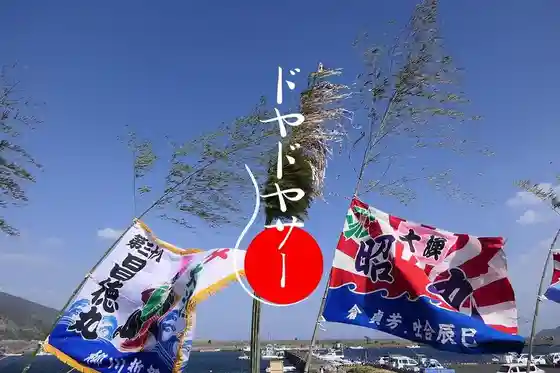

JAXA Uchinora Uchukukan Kansokujo
Kimotsuki, Kagoshima · 050-3362-3111 · Official / source link
Todoroki Falls
Kimotsuki, Kagoshima · 0994-67-2888 · Official / source link

Yabusame no Sato Park Kozan Onsen Domu
Kimotsuki, Kagoshima · 0994-31-5711 · Official / source link

Doyadoyasa (Onibi Taki)
Kimotsuki, Kagoshima · Official / source link

Shiju Kyu Tokoro Shrine
Kimotsuki, Kagoshima · 0994-65-2938 · Official / source link
Nagoshidon
Kimotsuki, Kagoshima · 0994-67-2888 · Official / source link
Kishi Ryo Coast
Kimotsuki, Kagoshima · 0994-67-2888 · Official / source link
Nikaido Ie House
Kimotsuki, Kagoshima · 0994-31-5252 · Official / source link
Ikeuo Ryori no Mise Amimoto
Kimotsuki, Kagoshima · 0994-67-2623 · Official / source link
Toji Yu no Sato Yu no Tani Onsen
Kimotsuki, Kagoshima · 0994-34-6161 · Official / source link
Tsukazaki no Kusu
Kimotsuki, Kagoshima · 0994-65-0170 · Official / source link
Tekotendon
Kimotsuki, Kagoshima · Official / source link
Hen Tsuka Coast
Kimotsuki, Kagoshima · 0994-67-2888 · Official / source link
Honjo no Oicho
Kimotsuki, Kagoshima · 0994-65-2594 · Official / source link
Michitaka Jiseki
Kimotsuki, Kagoshima · Official / source link
JAXA Uchu Kagaku Museum (JAXA Uchinora Uchukukan Kansokujo Nai)
Kimotsuki, Kagoshima · 050-3362-3111 · Official / source link
Futamata Kawa Campground
Kimotsuki, Kagoshima · 0994-65-2594 · Official / source link
Shiju Kyu Tokoro Shrine no Hotaru
Kimotsuki, Kagoshima · 0994-67-2888 · Official / source link
Tsukazaki Kofun Gun
Kimotsuki, Kagoshima · 0994-65-0170 · Official / source link
Uchinora Kaizo Yosaiato
Kimotsuki, Kagoshima · 0994-67-2888 · Official / source link